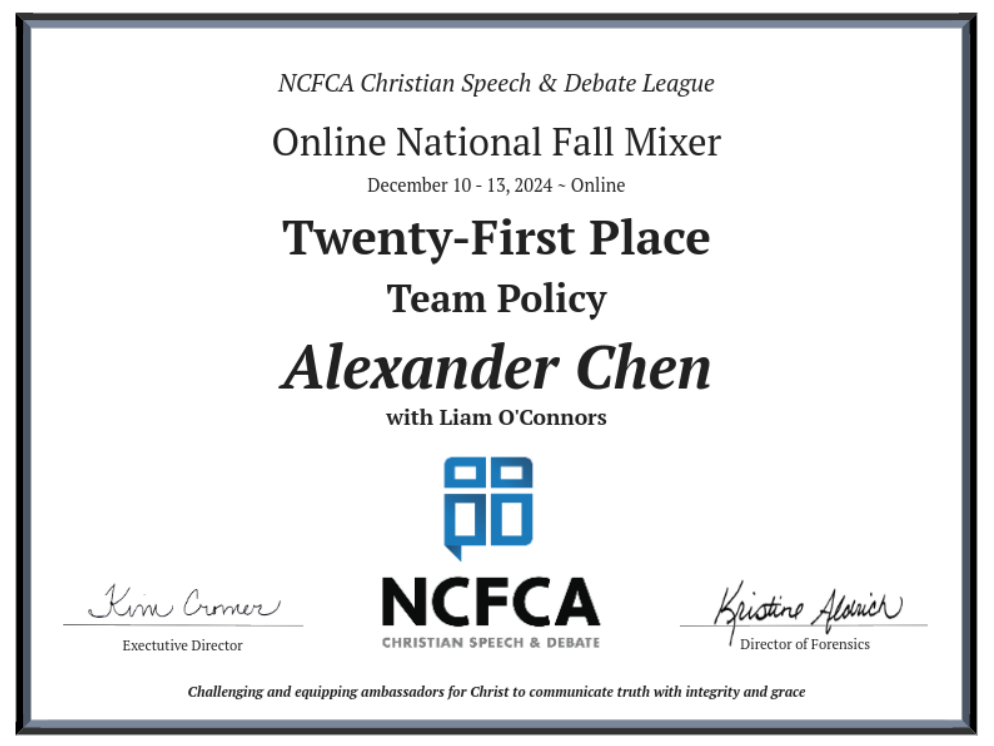
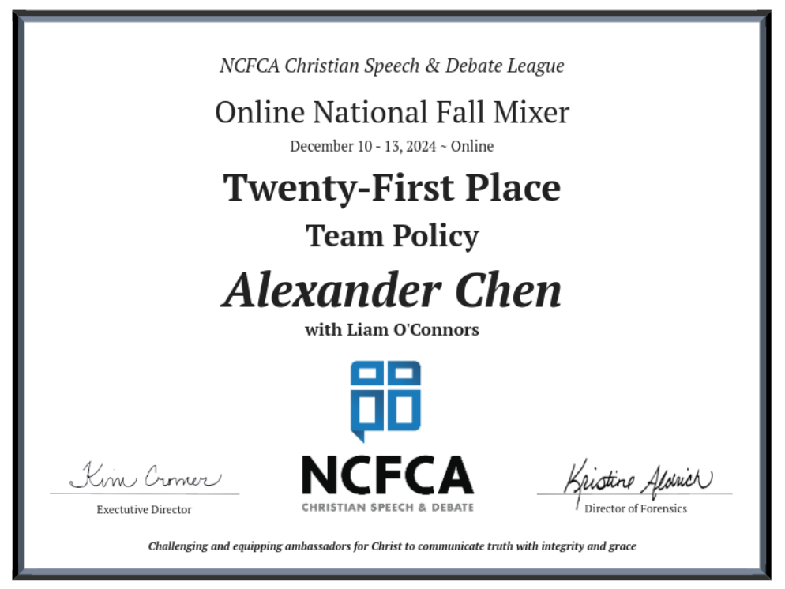
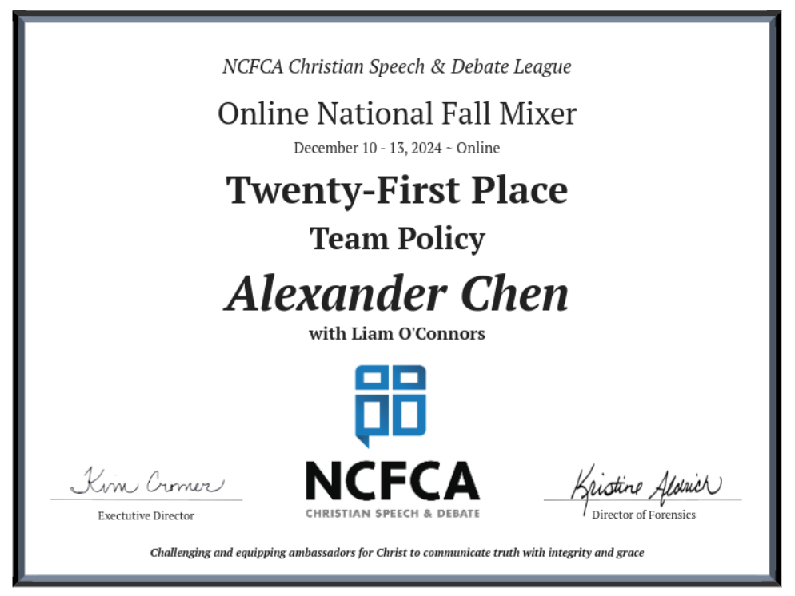

12/31/2024
Liam O'Connors (my partner this year) and I have gotten off to a strong start this year's team policy debate season.
At the first online tournament, we made it to elimination rounds, placing 21st out of ~80 teams.
I also placed as the second overall team policy speaker.
The debate resolution for this year focuses on U.S. foreign policy towards Central America, targeting important issues like migration, smuggling, and corruption.
This'll be a fun second year in NCFCA for me, and I'm looking forward to competing more!
 

The debate resolution for this year focuses on U.S. foreign policy towards Central America, targeting important issues like migration, smuggling, and corruption.
This'll be a fun second year in NCFCA for me, and I'm looking forward to competing more!
